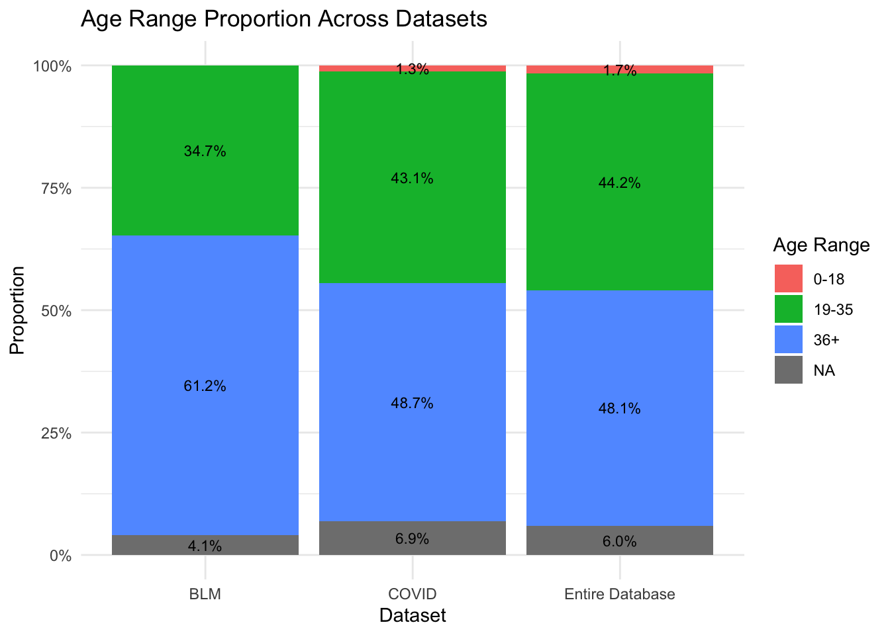
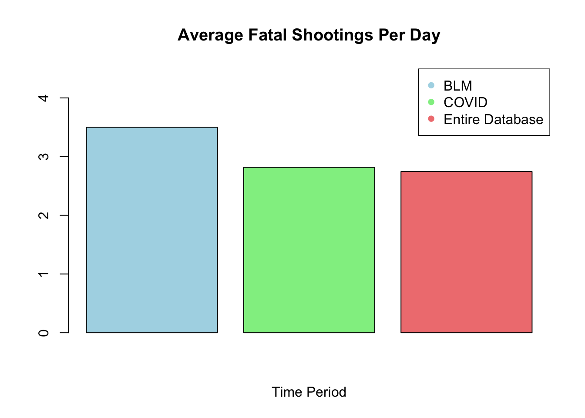

Members: Sophia Chavez, Carolyn Hsu, Leo Guzman, and Bryan Pham
Research topic:
Our group will analyze a dataset containing the reported fatal police shootings in the United States from 2015 through 2022. By comparing our findings to the people in power and/or the social movements throughout those years, our goal is to identify any correlations between the current political/social climate and the reported fatal police shootings in the United States.
id name date manner_of_death armed armed_agg age gender race
1 3 Tim Elliot 1/2/2015 shot gun Gun 53 M A
2 4 Lewis Lee Lembke 1/2/2015 shot gun Gun 47 M W
race_name city state signs_of_mental_illness threat_level flee
1 Asian Shelton WA TRUE Extreme Not fleeing
2 White Aloha OR FALSE Extreme Not fleeing
body_camera longitude latitude is_geocoding_exact
1 FALSE -123.122 47.247 TRUE
2 FALSE -122.892 45.487 TRUE
Code
#Convert the `date` column to Date format so can extract the yearFatalShootingsStats$date <-as.Date(FatalShootingsStats$date, format ="%m/%d/%Y")#Made new column for year as an intFatalShootingsStats$year <-as.integer(format(FatalShootingsStats$date, "%Y"))
Event 1: Black Lives Matter Movement
On May 25, 2020, George Floyd, a Black man living in Minneapolis, Minnesota was brutally killed by a Minneapolis police officer. This sparked a new peak in the Black Lives Matter (BLM) movement, where there was a new wave of both peaceful protests and riots. The peak of the BLM riots, vandalism, arson and looting occurred from May 26th to June 8th in 2020. During these 2 weeks, were fatal shootings higher than normal?
Code
library(dplyr)
Attaching package: 'dplyr'
The following objects are masked from 'package:stats':
filter, lag
The following objects are masked from 'package:base':
intersect, setdiff, setequal, union
Code
# Convert the 'Date' column to Date type if it isn't alreadyFatalShootingsStats$date <-as.Date(FatalShootingsStats$date, format ="%Y-%m-%d") # Adjust format if needed# Specify the two specific dates you want to checkdate1 <-as.Date("2020-05-26") # Example date 1date2 <-as.Date("2020-06-08") # Example date 2# Filter data for those two dates and count the total number of shootingsshootings_period <- FatalShootingsStats %>%filter(date >= date1 & date <= date2)# Number of unique days in the time periodunique_days_period <-length(seq.Date(date1, date2, by ="day"))# Total number of shootings in the time periodtotal_shootings_period <-nrow(shootings_period)# Average shootings per day for the time period (including all days in the range)avg_shootings_per_day_period <- total_shootings_period / unique_days_period# 2. Calculate the average number of shootings per day for the entire dataset# Find the first and last dates in the datasetfirst_date <-min(FatalShootingsStats$date)last_date <-max(FatalShootingsStats$date)# Number of unique days in the entire dataset (including all days between the first and last date)unique_days_total <-length(seq.Date(first_date, last_date, by ="day"))# Total number of shootings in the entire datasettotal_shootings_total <-nrow(FatalShootingsStats)# Average shootings per day for the entire dataset (including all days in the range)avg_shootings_per_day_total <- total_shootings_total / unique_days_total# Print the resultscat("Average shootings per day for the period from May 26, 2020 to June 8, 2020 :", avg_shootings_per_day_period, "\n")
Average shootings per day for the period from May 26, 2020 to June 8, 2020 : 3.5
Code
cat("Average shootings per day for the entire dataset:", avg_shootings_per_day_total, "\n")
Average shootings per day for the entire dataset: 2.744767
Code
# Create a vector with the two averagesaverage_shootings <-c(avg_shootings_per_day_period, avg_shootings_per_day_total)# Create a bar plotbarplot(average_shootings, names.arg =c("peak BLM riots", "Entire Dataset"), main ="Comparison of Average Shootings per Day", ylab ="Average Shootings per Day", col =c("lightblue", "lightgreen"), border ="black")
Code
library(maps)state_to_highlight <-"Minnesota"# Basic Map Plotmaps::map("state", col ="lightgray", fill =TRUE, bg ="white", lwd =0.2) # Draw USA mapmaps::map("state", region = state_to_highlight, col ="lightblue", fill =TRUE, add =TRUE)# Overlay points for Los Angeles and Miami# Coordinates for Los Angelespoints(-118.2437, 34.0522, col ="blue", pch =19, cex =2) # Los Angeles# Optionally, add text labels for the citiestext(-118.2437, 34.0522, "Los Angeles", pos =3, col ="blue", cex =1)# Overlay points (longitude, latitude) on the mappoints(shootings_period$longitude, shootings_period$latitude, col ="red", pch =20, cex =1.5)
As we can see, the average number of fatal shootings a day were slightly greater during the peak of the riots, vandalism, arson and looting after George Floyd’s death. Surprisingly, none of the deaths occurred in Minneapolis, which was a hot spot for said BLM riots, but Los Angeles, which was also a hot spot, is shown to have a few deaths in it’s area. So, while the average number of fatal shooting during the peak of the BLM riots period doesn’t seem that much larger than the average number of fatal shootings in the entire data set, it doesn’t tell the entire picture. If the average number of fatal shootings during the seven and a half years the data set encapsulates was the same as the average during the peak of the BLM riots, there would be an increase of 1,769 fatal shootings or 236 fatal shootings a year.
Event 2: Covid-19 Lockdowns
On January 5th, 2020, the CDC’s National Center for Immunization and Respiratory Diseases investigated the outbreak of a pneumonia-adjacent illness that was not responding to treatment, and by March 15th all but 7 U.S states shut down businesses, universities, and other large gatherings while urging people to stay in their homes to slow the spread. By analyzing our original dataset with respect to enforced quarantine periods, we can identify possible correlations between spatial mobility and fatal shootings in the US.
Code
library(maps)library(tidyverse)
── Attaching core tidyverse packages ──────────────────────── tidyverse 2.0.0 ──
✔ forcats 1.0.0 ✔ readr 2.1.5
✔ ggplot2 3.5.1 ✔ stringr 1.5.1
✔ lubridate 1.9.3 ✔ tibble 3.2.1
✔ purrr 1.0.2 ✔ tidyr 1.3.1
── Conflicts ────────────────────────────────────────── tidyverse_conflicts() ──
✖ dplyr::filter() masks stats::filter()
✖ dplyr::lag() masks stats::lag()
✖ purrr::map() masks maps::map()
ℹ Use the conflicted package (<http://conflicted.r-lib.org/>) to force all conflicts to become errors
Code
library(dplyr)library(ggplot2)# Convert the 'Date' column to Date type if it isn't alreadyFatalShootingsStats$date <-as.Date(FatalShootingsStats$date, format ="%Y-%m-%d") #filtering data by covid lockdown timelineduring_date1 <-as.Date("2020-03-15") # main US lockdown startduring_date2 <-as.Date("2021-05-01") # need to find sorce for this dateduring_covid <- FatalShootingsStats %>%filter(date >= during_date1 & date <= during_date2)before_date1 <-min(FatalShootingsStats$date) before_date2 <-as.Date("2020-03-14")before_covid <- FatalShootingsStats %>%filter(date >= before_date1 & date <= before_date2)after_date1 <-as.Date("2021-05-01") after_date2 <-max(FatalShootingsStats$date)after_covid <- FatalShootingsStats %>%filter(date >= after_date1 & date <= after_date2)#total number of shootings per time periodtotal_shootings_during <-nrow(during_covid)total_shootings_before <-nrow(before_covid)total_shootings_after <-nrow(after_covid)#total number of days in time periodunique_days_during <-length(seq.Date(during_date1, during_date2, by ="day"))unique_days_before <-length(seq.Date(before_date1, before_date2, by ="day"))unique_days_after <-length(seq.Date(after_date1, after_date2, by ="day"))#shootings per dayavg_shootings_during <- total_shootings_during / unique_days_duringavg_shootings_before <- total_shootings_before / unique_days_beforeavg_shootings_after <- total_shootings_after / unique_days_aftercat("Before the lockdowns: Total shootings ",total_shootings_before," Average shootings per day", avg_shootings_before, "\n")
Before the lockdowns: Total shootings 5128 Average shootings per day 2.700369
Code
cat("During the lockdowns: Total shootings ",total_shootings_during," Average shootings per day", avg_shootings_during, "\n")
During the lockdowns: Total shootings 1164 Average shootings per day 2.818402
Code
cat("After the lockdowns: Total shootings ",total_shootings_after," Average shootings per day", avg_shootings_after, "\n")
After the lockdowns: Total shootings 1186 Average shootings per day 2.878641
Code
#cat("Number of days in dataset before lockdowns ",unique_days_before,"\n", "Number of days in dataset during lockdowns ",unique_days_during,"\n","Number of days in dataset after lockdowns ",unique_days_after,"\n")
Map Visual Note: It’s important to remember the fatal shootings dataset has more data points before the COVID-19 pandemic compared to after. The higher density of shootings before the COVID-19 lockdowns can be linked to the skewed dataset/states with higher population
Code
#"Arkansas", "Iowa", "Nebraska", "North Dakota", "South Dakota", "Utah", "Wyomming"## Arkansas data before_ar <- before_covid %>%filter(before_covid$state =="AR"| before_covid$state =="IA"| before_covid$state =="NE"| before_covid$state =="ND"| before_covid$state =="SD"| before_covid$state =="UT"| before_covid$state =="WY" )during_ar <- during_covid %>%filter(during_covid$state =="AR"| during_covid$state =="IA"| during_covid$state =="NE"| during_covid$state =="ND"| during_covid$state =="SD"| during_covid$state =="UT"| during_covid$state =="WY" )after_ar <- after_covid %>%filter(after_covid$state =="AR"| after_covid$state =="IA"| after_covid$state =="NE"| after_covid$state =="ND"| after_covid$state =="SD"| after_covid$state =="UT"| after_covid$state =="WY" )#total number of shootings per time periodtotal_shootings_Bar <-nrow(during_ar)total_shootings_Dar <-nrow(before_ar)total_shootings_Aar <-nrow(after_ar)#shootings per daystate_avg_shootings_during <- total_shootings_Dar / unique_days_duringstate_avg_shootings_before <- total_shootings_Bar / unique_days_beforestate_avg_shootings_after <- total_shootings_Aar / unique_days_aftercat("Shootings per day during COVID-19 in states with no enforced lockdowns",state_avg_shootings_during,"\n", "Shootings per day before COVID-19 in states with no enforced lockdowns",state_avg_shootings_before,"\n", "Shootings per day after COVID-19in states with no enforced lockdowns",state_avg_shootings_after)
Shootings per day during COVID-19 in states with no enforced lockdowns 0.5472155
Shootings per day before COVID-19 in states with no enforced lockdowns 0.02685624
Shootings per day after COVID-19in states with no enforced lockdowns 0.1529126
We expect the total number of fatal shootings will decrease during the enforced lockdown period due to the decreased social gatherings. However, our results show a different pattern, in fact we can see that there was no significant drop in the number of average shootings per day before and during lockdowns. Additionally, we can see that during and before COVID-19 lockdowns, the number of fatal shootings decreased in both states with and without enforced lockdowns. The decreased number of shootings in non-enforced lockdown states may be attributed to the overall decreased spatial mobility in the US. Numerous households voluntarily quarantined regardless of their state’s COVID-19 restrictions. Because we can identify a slight decreasing pattern in our data, we can conclude that the COVID-19 pandemic had little to no significant impact on the overall number of Police fatal shootings.
Fatal Shootings Dataset Analytics/ Compairing Event 1 and 2
Code
#BLMdate1 <-as.Date("2020-05-26") # Example date 1date2 <-as.Date("2020-06-08") # Example date 2# Filter data for those two dates and count the total number of shootingsshootings_period <- FatalShootingsStats %>%filter(date >= date1 & date <= date2)# Number of unique days in the time periodunique_days_period <-length(seq.Date(date1, date2, by ="day"))# Total number of shootings in the time periodtotal_shootings_period <-nrow(shootings_period)avg_shootings_per_day_BLM <- total_shootings_period / unique_days_period#Lockdownsduring_date1 <-as.Date("2020-03-15") # main US lockdown startduring_date2 <-as.Date("2021-05-01") # need to find sorce for this dateduring_covid <- FatalShootingsStats %>%filter(date >= during_date1 & date <= during_date2)total_shootings_during <-nrow(during_covid)#total number of days in time periodunique_days_during <-length(seq.Date(during_date1, during_date2, by ="day"))#shootings per dayavg_shootings_duringCovid <- total_shootings_during / unique_days_duringbodycam_true <-c(sum(during_covid$body_camera =="TRUE"), sum(shootings_period$body_camera =="TRUE"), sum(FatalShootingsStats$body_camera =="TRUE"))bodycam_percent <-c((bodycam_true[1]/nrow(during_covid)), (bodycam_true[2]/nrow(shootings_period)),(bodycam_true[3]/nrow(FatalShootingsStats)))average_age <-c(mean(during_covid$age, na.rm =TRUE), mean(shootings_period$age, na.rm =TRUE), mean(FatalShootingsStats$age, na.rm =TRUE))avg_shootings <-c(avg_shootings_per_day_BLM, avg_shootings_duringCovid, avg_shootings_per_day_total)gun_armedp <-c((sum(during_covid$armed =="gun") /nrow(during_covid)), (sum(shootings_period$armed =="gun") /nrow(shootings_period)), (sum(FatalShootingsStats$armed =="gun") /nrow(FatalShootingsStats)))unarmed_armedp <-c((sum(during_covid$armed =="unarmed") /nrow(during_covid)), (sum(shootings_period$armed =="unarmed") /nrow(shootings_period)), (sum(FatalShootingsStats$armed =="unarmed") /nrow(FatalShootingsStats)))car_armedp <-c((sum(during_covid$armed =="Vehicle") /nrow(during_covid)), (sum(shootings_period$armed =="Vehicle") /nrow(shootings_period)), (sum(FatalShootingsStats$armed =="Vehicle") /nrow(FatalShootingsStats)))mental_illness <-c(sum(during_covid$signs_of_mental_illness =="TRUE")/nrow(during_covid), sum(shootings_period$signs_of_mental_illness =="TRUE")/nrow(shootings_period), sum(FatalShootingsStats$signs_of_mental_illness =="TRUE")/nrow(FatalShootingsStats))BLM_Covid <-data.frame(avg_shootings, round(average_age, 1), bodycam_percent, gun_armedp, unarmed_armedp, car_armedp, mental_illness) names(BLM_Covid) <-c("Average Fatal Shootings Per Day", "Average Age", "Percent of officers with turned on body camera", "Armed (gun)", "Unarmed", "Armed (car)", "Signs of mental illness")rownames(BLM_Covid) <-c("BLM", "Covid-19", "Entire Dataset")BLM_Covid
Average Fatal Shootings Per Day Average Age
BLM 3.500000 37.2
Covid-19 2.818402 39.1
Entire Dataset 2.744767 37.2
Percent of officers with turned on body camera Armed (gun)
BLM 0.2061856 0.6159794
Covid-19 0.1836735 0.5306122
Entire Dataset 0.1420926 0.5698421
Unarmed Armed (car) Signs of mental illness
BLM 0.04896907 0.04553265 0.1958763
Covid-19 0.04081633 0.06122449 0.1632653
Entire Dataset 0.05980733 0.03585764 0.2139417
hat
Code
# showing interesting data pointstime_period <-c("BLM", "COVID", "Entire Database")colors <-c("lightblue", "lightgreen", "lightcoral")barplot(BLM_Covid$`Average Fatal Shootings Per Day`, col = colors,main ="Average Fatal Shootings Per Day",xlab ="Time Period", )legend("topright", legend = time_period , col = colors, pch =16 ) #TO FIX make sure legend is not on top of figure
#time_period <-c("BLM", "COVID", "Entire Database")colors <-c("lightblue", "lightgreen", "lightcoral")barplot(BLM_Covid$`Percent of officers with turned on body camera`, col = colors,main ="Percent of officers with turned on body camera",xlab ="Time Period", ylim =c(0,1))legend("topright", legend = time_period , col = colors, pch =16)
Code
# another option changing lables into x axis
Code
shootings_period$age <-as.numeric(as.character(shootings_period$age))during_covid$age <-as.numeric(as.character(during_covid$age))FatalShootingsStats$age <-as.numeric(as.character(FatalShootingsStats$age))# Add AgeRange dynamically to each datasetshootings_period$AgeRange <-cut( shootings_period$age,breaks =c(0, 18, 35, Inf),labels =c("0-18", "19-35", "36+"),right =FALSE)during_covid$AgeRange <-cut( during_covid$age,breaks =c(0, 18, 35, Inf),labels =c("0-18", "19-35", "36+"),right =FALSE)FatalShootingsStats$AgeRange <-cut( FatalShootingsStats$age,breaks =c(0, 18, 35, Inf),labels =c("0-18", "19-35", "36+"),right =FALSE)# Add a dataset column for identificationshootings_period$Dataset <-"BLM"during_covid$Dataset <-"COVID"FatalShootingsStats$Dataset <-"Entire Database"# Combine datasets into onecombined_data <-bind_rows(shootings_period, during_covid, FatalShootingsStats)# Calculate proportionssummary_data <- combined_data %>%group_by(Dataset, AgeRange) %>%summarise(Count =n(), .groups ="drop") %>%group_by(Dataset) %>%mutate(Proportion = Count /sum(Count))# Create a stacked bar graph with proportionsggplot(summary_data, aes(x = Dataset, y = Proportion, fill = AgeRange)) +geom_bar(stat ="identity", position ="stack") +geom_text(aes(label = scales::percent(Proportion, accuracy =0.1)), # Format as percentageposition =position_stack(vjust =0.5), # Place text in the middle of each segmentsize =3# Adjust text size ) +labs(title ="Age Range Proportion Across Datasets",x ="Dataset",y ="Proportion",fill ="Age Range" ) +scale_y_continuous(labels = scales::percent_format()) +# Display y-axis as percentagestheme_minimal()

Race Statistics
Code
# filtering data to include only unarmed incidentsunarmed_data <-subset(FatalShootingsStats, FatalShootingsStats$armed =="unarmed")# count unarmed fatalities by raceunarmed_deaths_by_race <-aggregate(unarmed_data$armed, by =list(Race = unarmed_data$race_name), FUN = length)colnames(unarmed_deaths_by_race)[2] <-"Unarmed_Deaths"# count displayunarmed_deaths_by_race
Race Unarmed_Deaths
1 Asian 8
2 Black 142
3 Hispanic 81
4 Native American 6
5 Other 5
6 Unknown 29
7 White 176
Code
# count total fatalities by racetotal_deaths_by_race <-aggregate(FatalShootingsStats$armed, by =list(Race = FatalShootingsStats$race_name), FUN = length)# ensure all races are represented in unarmed deaths by raceall_races <-unique(FatalShootingsStats$race_name)unarmed_deaths_by_race <-aggregate(unarmed_data$armed, by =list(Race = unarmed_data$race_name), FUN = length)unarmed_deaths_by_race <-merge(data.frame(Race = all_races), unarmed_deaths_by_race, by ="Race", all.x =TRUE)unarmed_deaths_by_race[is.na(unarmed_deaths_by_race)] <-0# Replace NA with 0# merge total deaths and unarmed deathsrace_unarmed_comparison <-merge(unarmed_deaths_by_race, total_deaths_by_race, by ="Race", suffixes =c("_Unarmed", "_Total"))# calculate percentage of unarmed fatalities for each racerace_unarmed_comparison$Unarmed_Death_Percentage <- (race_unarmed_comparison$x_Unarmed / race_unarmed_comparison$x_Total) *100# rename columns for claritycolnames(race_unarmed_comparison) <-c("Race", "Unarmed_Deaths", "Total_Deaths", "Unarmed_Death_Percentage")# display the updated data framerace_unarmed_comparison
Race Unarmed_Deaths Total_Deaths Unarmed_Death_Percentage
1 Asian 8 105 7.619048
2 Black 142 1623 8.749230
3 Hispanic 81 1095 7.397260
4 Native American 6 92 6.521739
5 Other 5 47 10.638298
6 Unknown 29 1436 2.019499
7 White 176 3076 5.721717
Code
# adjust margins to give more space to labelspar(mar =c(5, 10, 4, 2) +0.1) # Increase left margin for y-axis labels# create a horizontal bar plotbarplot(race_unarmed_comparison$Unarmed_Death_Percentage,names.arg = race_unarmed_comparison$Race,main ="Percentage of Unarmed Fatalities by Race",xlab ="Percentage of Unarmed Fatalities",col ="lightcoral",horiz =TRUE, # Horizontal barslas =1, # Ensure labels are horizontal on y-axiscex.names =0.9) # Adjust label size if needed
Code
# reset margins after plotting (optional if running multiple plots in sequence)par(mar =c(5, 4, 4, 2) +0.1)# i think this code can be reused if we make the x axis the time period and show unarmed/armed deaths per race - sophia
The graph demonstrates a wide percentages of fatalities by race, revealing the disparities in police-related fatalities among racial group. Black and Hispanic individuals have higher percentages of unarmed deaths to compared to other racial group representing the systemic biases in the police force. Native Americans show a disproportionate portion relative to their population size, showing their vulnerability to police forces.
# Check if the required columns existif (!all(c("year", "race_name") %in%colnames(FatalShootingsStats))) {stop("The columns 'year' and 'race_name' are missing in FatalShootingsStats.")}# Aggregate data to create race_year_countsrace_year_counts <- FatalShootingsStats %>%group_by(Year = year, Race = race_name) %>%# Group by year and racesummarise(Count =n(), .groups ="drop") # Count occurrences and ungroup# Ensure data completeness: Fill missing Year-Race combinations with zerosrace_year_counts <- race_year_counts %>%complete(Year, Race, fill =list(Count =0)) # Fill missing combinations with 0 counts# Verify the resulting datasetprint(head(race_year_counts))
# A tibble: 6 × 3
Year Race Count
<int> <chr> <int>
1 2015 Asian 15
2 2015 Black 258
3 2015 Hispanic 173
4 2015 Native American 9
5 2015 Other 14
6 2015 Unknown 23
# Ensure the dataset has the required columns: Year, Race, Count# If not, aggregate data to create race_year_countsif (!"Count"%in%colnames(race_year_counts)) { race_year_counts <- FatalShootingsStats %>%group_by(Year = year, Race = race_name) %>%summarise(Count =n(), .groups ="drop")}# Ensure data completeness: fill missing values with zeros for all combinations of Year and Racerace_year_counts <- race_year_counts %>%complete(Year, Race, fill =list(Count =0))# Set up an empty plot with the correct axes limitsplot(NULL, xlim =range(race_year_counts$Year, na.rm =TRUE), ylim =c(0, max(race_year_counts$Count, na.rm =TRUE)), xlab ="Year", ylab ="Number of Fatal Shootings", main ="Fatal Shootings by Race Over the Years")# Define colors for each racerace_colors <-c("blue", "green", "red", "purple", "orange", "pink", "gray")# Get unique racesunique_races <-unique(race_year_counts$Race)# Loop through each race to plot its line on the graphfor (i in1:length(unique_races)) {# Subset data for the current race race_data <-subset(race_year_counts, Race == unique_races[i])# Ensure data is sorted by Year for proper line plotting race_data <- race_data[order(race_data$Year), ]# Plot the line for this racelines(race_data$Year, race_data$Count, type ="o", col = race_colors[i], pch =16)}# Add a legendlegend("topright", legend = unique_races, col = race_colors, pch =16, lty =1)
A general trend is the decline in number of fatal shooting over the years, particularly 2020-2022 probably due to the pandemic reforming public interaction in police enforcement. The height of shootings in 2020 is likely caused from the Black Lives Matter movement
Code
FatalShootingsStats$age <-as.numeric(as.character(FatalShootingsStats$age))# Create AgeRange dynamicallyFatalShootingsStats$AgeRange <-cut( FatalShootingsStats$age,breaks =c(0, 18, 35, Inf), # Define age range intervalslabels =c("0-18", "19-35", "36+"),right =FALSE# Makes intervals inclusive on the left)# Summarize data to count individuals by Race and AgeRangesummary_data <- FatalShootingsStats %>%group_by(race, AgeRange) %>%summarise(Count =n(), .groups ="drop")# Create the bar plotggplot(FatalShootingsStats, aes(x = race_name, y = age, fill = AgeRange)) +geom_bar(stat ="identity", position ="dodge") +# Position bars side by sidelabs(title ="Bar Plot of Races by Age Range",x ="Race",y ="Count" ) +scale_fill_brewer(palette ="Set2") +# Optional color palettetheme_minimal() # Clean theme
Warning: Removed 445 rows containing missing values or values outside the scale range
(`geom_bar()`).

Findings: During peak BLM movement periods, the percentage of officers with turned-on body cameras increases from approximately 14% to 21%. Additionally, there is a positive correlation between average fatalities per day and the percentage of turned-on body cameras throughout all highlighted datasets.
Questions: - What did we expect? - What actually happened? - What are the parameters when classifying a person’s race_name as “unknown”? - Why is there a substantial jump in fatalities per day with unknown races, specifically beginning in 2020? - Were there any correlations between the current political/social climate and the reported fatal police shootings in the United States?